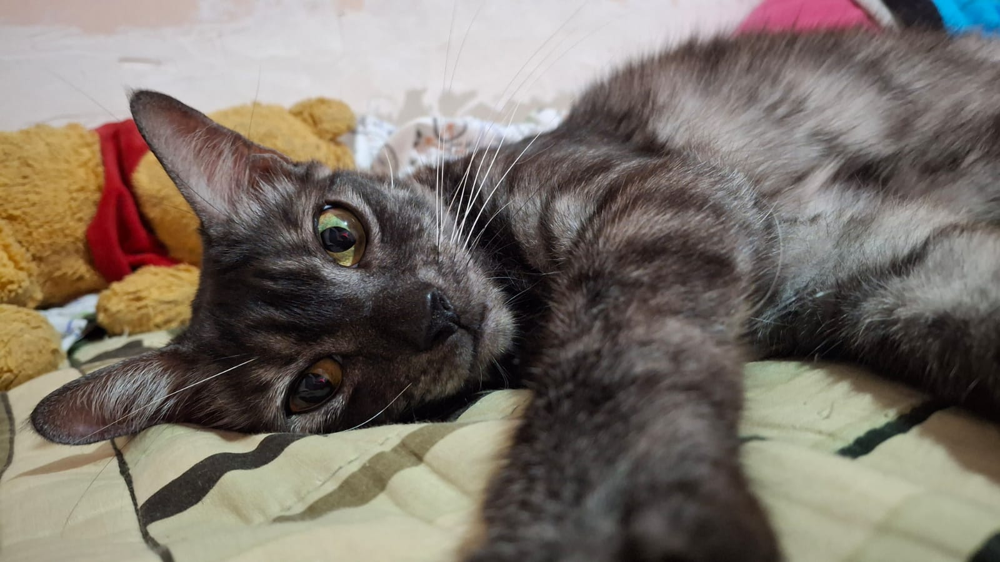

♡ Sobre mí
¡Hola! Soy Heidi Piña, tengo 22 años y actualmente soy estudiante universitaria de quinto año. Me considero una persona curiosa, soñadora y con muchas ganas de aprender cosas nuevas, tanto en el ámbito académico como en el personal.
Tengo un hermano menor y una familia con la que disfruto compartir mi tiempo. Además, mis mascotas son una parte muy especial de mi vida: tengo dos perros y una gata que llenan mi hogar de alegría y cariño. Me gustan los momentos tranquilos en casa y las pequeñas cosas que hacen felices mis días.
☆ Mis intereses y habilidades
- Hablo inglés y me gusta seguir mejorando mis habilidades.
- Me encanta ver películas de diferentes géneros.
- Disfruto ver gameplays de videojuegos, especialmente cuando mi novio me transmite sus partidas.
- Me gusta jugar videojuegos junto a mi novio y compartir esos momentos con él.
- Disfruto pasar tiempo con mis amigos en reuniones y salidas.
- Me interesa aprender cosas nuevas y crecer personal y profesionalmente.
♡ Mi gata

Un pequeño espacio para mi compañera peluda.
☆ Mis redes y sitios favoritos
Estos son algunos de mis perfiles y sitios favoritos: